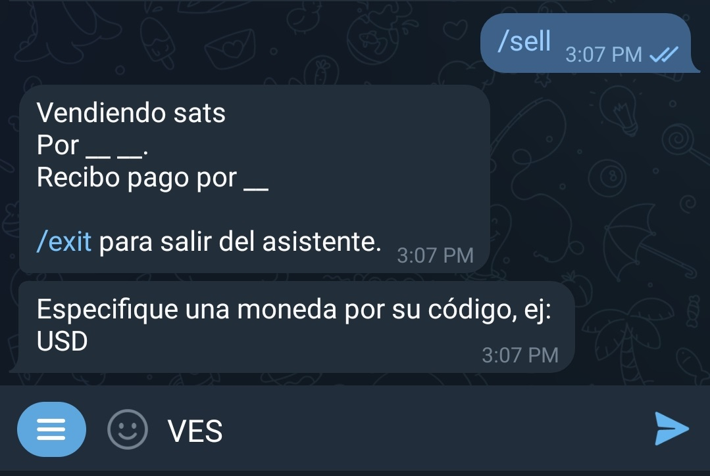
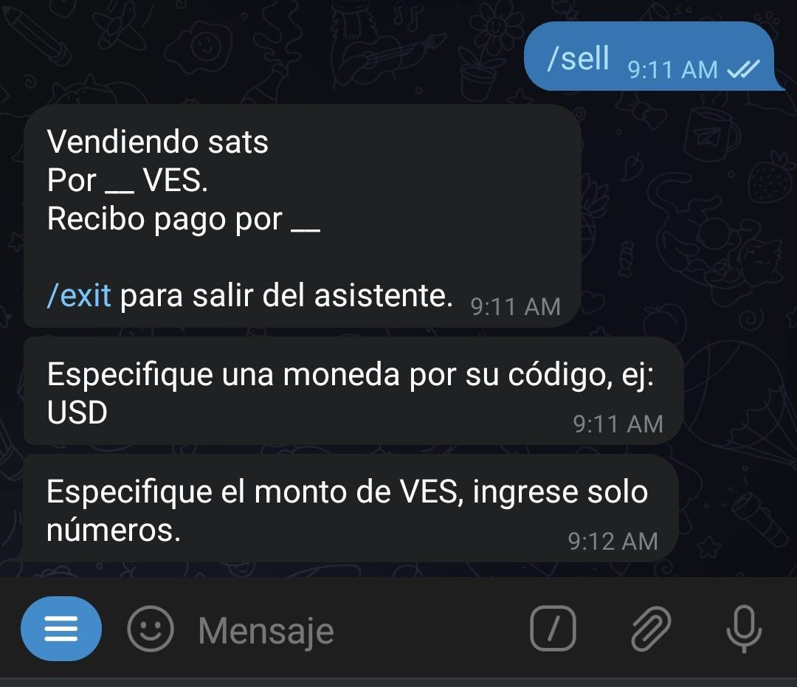
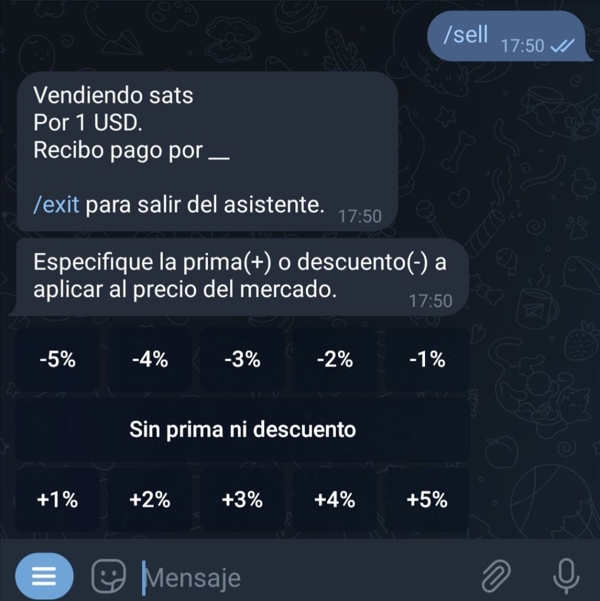
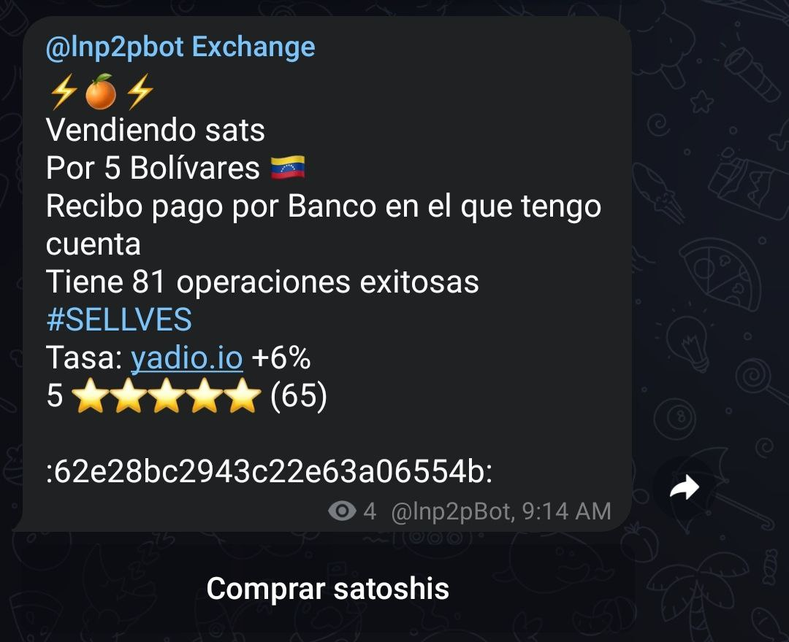
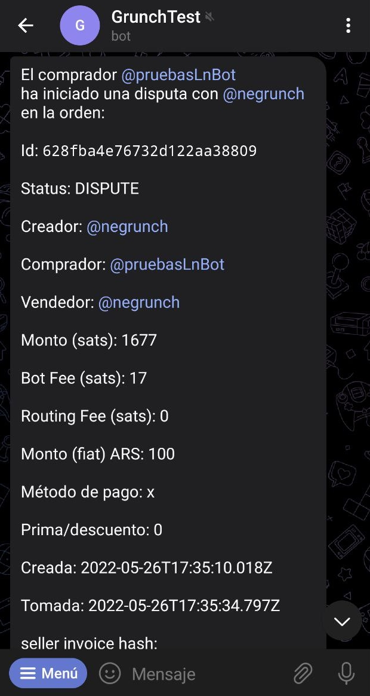

@lnp2pBot
اینجا اطلاعاتی درباره ربات @lnp2pBot خواهید دید. این ربات تلگرام، مناسب خرید و فروش بیت کوین در شبکه لایتنینگ، به صورت همتا به همتا، با استفاده از ارز محلیتان و بدون نیاز به احراز هویت KYC یا ارائه اطلاعات شخصی است.
راهنما شروع سریع
- یک کیفپول سازگار با شبکه لایتنینگ دانلود کنید (کیفپولهای پیشنهادی).
- برای تلگرام خود یک نام کاربری(username) تعیین کنید.
- ربات @lnp2pBot را در تلگرام خود باز کنید.

- میتوانید سفارشات خرید و فروش را در لینکهای زیر پیدا کنید:
- سایت https://market.lnp2pbot.com
- کانال عمومی سفارشات: @lnp2pbot Exchange
- یک کامیونیتی که در آن ارز منطقه شما استفاده میشود

-
وقتی سفارشی را دریافت میکنید، @lnp2pBot قدم به قدم شما را در فرآیند خرید/فروش راهنمایی میکند.
-
اگر سفارش مناسبی پیدا نکردید، یک سفارش ایجاد کنید و منتظر بمانید تا شخصی آن را قبول کند. دستور
buy/را @lnp2pBot جهت خرید ساتوشی وsell/را جهت فروش ساتوشی وارد کنید تا ربات شما را برای تکمیل سفارش راهنمایی کند. اگر میخواهید سفارش شما در یک کامیونیتی خاص به جای کانال پیشنهاد عمومی منتشر شود، باید یک کامیونیتی پیشفرض انتخاب کنید. -
شروع به خرید و فروش کنید.
-
پاسخ سوالات خود را در بخش سوالات پر تکرار بیابید.
توصیهها
-
هر سوالی در خصوص https://lnp2pbot/learn داشتید، در گروه تلگرام پشتیبانی عضو شده و آنجا بپرسید.
-
باگها و پیشنهادات خود را در GitHub repositories گزارش دهید.
-
ما را در توییترمان دنبال کنید تا اطلاعیههای مهم را از دست ندهید.
-
سوالات متداول(FAQ)
در اینجا سعی می کنیم به سوالات متداول پاسخ دهیم.
ربات lnp2pBot@ چیست؟
ربات تلگرامی Lnp2pBot یک سیستم مبادله بیتکوین در برابر ارز کشورهای مختلف است که با استفاده از شبکه لایتنینگ امکان تراکنشهای شخص به شخص آسان و ایمن را فراهم میکند(بدون نیاز به صرافی های متمرکز دولتی). از این ربات میتوان با نام مستعار، بدون ثبت نام کاربر یا احراز هویت استفاده کرد. این ابزار فقط ساتوشی (کوچکترین واحد بیت کوین) را برای حداقل زمان لازم نگه می دارد و در مقایسه با خدمات صرافی با کیف پول داخلی که کلیه وجوه را به شکل حضانتی نگهداری میکنند، امنیت و حریم خصوصی به نسبت بیشتری را برای کاربران فراهم میکند(مثل صرافیهای داخلی آمار معاملات کاربران در اختیار دولت نیست). Lnp2pBot یک برنامه منبع باز(open-source) است که امکان ممیزی، تکرار، اصلاح و توزیع مجدد را با آزادی و دسترسی کامل به عموم فراهم میکند. به @lnp2pBot بروید
شبکه لایتنینگ چیست؟
به طور خلاصه Lighting Network شبکهای از کانال های پرداخت است که به عنوان پروتکل لایه دوم در شبکه بیت کوین کار میکند و از ویژگی نوشتن قراردادهای هوشمند بر روی بلاکچین خود بهره می برد. این یک راهحل مقیاسپذیر است که امکان افزایش تصاعدی تعداد تراکنشها و سرعت آنها را بدون نیاز به تأییدهای زنجیره ای فراهم میکند، در حالی که کارمزهای شبکه را به شدت کاهش میدهد. پرداخت ها فوری می شوند و هزینه نزدیک به صفر دارند.
منابع فارسی جهت آشنایی با شبکه لایتنینگ:
- راهنمای مقدماتی لایتنینگ در سایت منابع فارسی بیتکوین
- پلی لیست آموزش لایتنینگ در یوتیوب ضیا صدر
- گروه تلگرامی پرسش و پاسخ persianlightning@
- ویس لایتنینگ به زبان ساده کانال تلگرام stupi_drisks@
برای استفاده از lnp2pBot@ به چه چیزی نیاز دارم؟
برای شروع به کار و تعامل با ربات، شما فقط به یک حساب کاربری در تلگرام با یک username نیاز دارید. علاوه بر این، به کیف پولی نیاز دارید که از شبکه لایتنینگ پشتیبانی کند. در اینجا چند کیف پول توصیه شده وجود دارد.
چگونه ربات را راهاندازی کنم؟
یک چت خصوصی با ربات @lnp2pBot باز کرده و روی "START" کلیک کنید یا دستور start/ را تایپ و ارسال کنید.
- اگر هنوز ربات را راهاندازی نکرده باشید، نمیتوانید از کانالهایی که در آنجا سفارشات منتشر میشوند، سفارشی دریافت کنید.
کانالهای تبادل در تلگرام کدامند؟
برای ایجاد سفارشات buy/sell خود برای بیتکوین، از چت کردن با @lnp2pbot استفاده کنید.
پیشنهادهای ایجاد شده با @lnp2pBot در کانالهای تلگرام منتشر میشوند که از آنجا میتوانید با کلیک کردن روی دکمه «خرید ساتوشی» یا «فروش ساتوشی» که در زیر هر کدام ظاهر میشود، دریافت کنید.
یک کانال عمومی [@p2plightning] (https://t.me/p2plightning) وجود دارد که در آن پیشنهادهایی که به هیچ کامیونیتیها تعلق ندارند فهرست شده است، بنابراین آنجا ارزهای فیات مختلفی در دسترس هستند. علاوه بر این، کانالهای مرتبط با انجمنها وجود دارد که فقط پیشنهادهایی با ارزهای فیات مجاز در آن جوامع منتشر میشود.
کجا میتوانم سفارشات مربوط به به ارز کشور خود را پیدا کنم؟
میتوانید با اجرای دستور findcomms/ به همراه نماد پول خود از ربات بپرسید.
یا به عنوان مثال، برای دیدن کامیونیتیهای فعال در تومان ایران، باید تایپ کنید:
/findcomms irt
همچنین میتوانید سفارشات فیلتر شده بر اساس ارزها و انجمنها را در https://market.lnp2pbot.com و در کانال عمومی p2plightning@ پیدا کنید.
آیا نیاز به هر گونه ثبت نام کاربری یا احراز هویت دارم؟
نه! بیت کوین به عنوان "یک سیستم پول الکترونیکی همتا به همتا"(P2P) متولد شد و ما مفتخریم که از این اصل حمایت میکنیم. هیچ اطلاعات شخصی از شما لازم نیست. مبادلات کاملاً بین طرفین انجام میشود و @lnp2pBot هیچ گونه اطلاعات شخصی از طرفهای درگیر را جمعآوری یا ذخیره نمیکند.
چه نوع اطلاعاتی از هر کاربر جمع آوری میکنید؟
برای تعیین سیستم شهرت سنجی(اعتبار) کاربر، ربات lnp2pBot برخی از آمار معاملات شما را جمعآوری میکند. این اطلاعات عبارتند از: تعداد معاملات تکمیل شده، حجم کل معاملات کاربر، امتیاز ثبت شده توسط همتایان و سابقه اختلافات(در صورت وجود). از این اطلاعات، تنها تعداد معاملات و امتیاز ثبت شده توسط همتایان به طور پیش فرض قابل روئیت برای عموم است. در حالی که، نمایش حجم کل معاملات و نام کاربری شما اختیاری است. یعنی شما انتخاب میکنید که این اطلاعات در کانال سفارشات نشان داده شود یا نه(به طور پیش فرض نشان داده نمیشود).
در صورتی که می خواهید نام کاربری و یا حجم معاملاتتان برای افزودن به شهرت شما در کانال سفارشات منتشر شود، باید این کار را به صورت دستی از طریق وارد کردن دستورات زیر در چت شخصی ربات انجام دهید:
/showusername yes
/showvolume yes
هر دستور به عنوان یک پیام مستقیم به ربات ارسال میشود.
سیستم امتیازسنجی کاربر چگونه کار میکند؟
برای هر تراکنشی که انجام میدهید، از شما خواسته میشود به همتای خود امتیاز دهید، و آنها نیز به شما امتیاز میدهند. lnp2pBot از یک سیستم رتبهبندی 5 ستاره استفاده میکند که به شما امکان میدهد تجربه خود را ارزیابی کنید، در اینجا 1 ستاره کمترین امتیاز و 5 ستاره بالاترین است. برای تعیین شهرت(اعتبار)، ربات یک محاسبه تکراری بر حسب میانگین و انحراف معیار استاندارد رتبهبندیها و عملیاتهای موفق انجام میدهد. از این رو، در معاملات اولیه، حتی اگر با حداکثر امتیاز را گرفته باشید، شهرت شما به سرعت بالا نخواهد رفت. با انجام سفارشات موفق بیشتر با امتیاز خوب، شهرتتان به تدریج افزایش مییابد.
می توانید روش این محاسبه را در آدرس زیر مشاهده کنید: https://github.com/lnp2pBot/bot/blob/main/bot/commands.js#L279
این بر اساس لینک زیر است: https://math.stackexchange.com/questions/2148877/iterative-calculation-of-mean-and-standard-deviation
وقتی سفارشی ثبت میکنید، بهطور پیشفرض تعداد عملیاتهای موفقی که انجام دادهاید، امتیازات دریافتشده از همتایان پیشینتان و تعداد عملیاتهای انجامشده را شامل میشود. برای جلوگیری از کلاهبرداری، توصیه میکنیم هنگام پذیرش سفارش نیز تمام این جنبهها را در نظر بگیرید و با کاربران خوش شهرتتر وارد معامله شوید.
چگونه یک سفارش فروش ثبت کنم؟
هنگام چت کردن با @lnp2pBot یک دکمه "Menu" پیدا خواهید کرد. روی آن کلیک کنید تا لیستی از دستوراتی که میتوانید استفاده کنید نمایش داده شود. دستور sell را انتخاب کنید: sell/ را بزنید تا حالت wizard، که شما را در فرآیند فروش راهنمایی میکند، فعال کنید.

پس از فعال شدن، wizard از شما میخواهد ارز فیاتی که میخواهید با آن معامله کنید را مشخص کنید:

در مرحله بعد باید مبلغی فیاتی را که در ازای ساتوشی میخواهید، وارد کنید. به یاد داشته باشید که در این مرحله فقط اعداد را وارد کنید(نه حروف و کاراکتر) تا wizard بتواند منظور شما را درک کند.
همچنین می توانید با جدا کردن اعداد با خط تیره (-) محدودهای از مقادیر را برای فروش وارد کنید. 
ربات مبلغی را که می خواهید تحویل دهید، به ساتوشی میپرسد. در اینجا شما امکان استفاده از دکمه "قیمت بازار" را دارید. اگر چنین کنید، نرخ یادیو. io اعمال خواهد شد.

در مرحله بعد، wizard درصد تخفیف یا حباب(premium or discount) مورد نظر شما در مبادله را درخواست خواهد کرد. اگر میخواهید سفارشتان با نرخی بالاتر از نرخ لحظهای بازار ثبت شود، premium را که یه عدد مثبت و برحسب درصد است افزایش دهید. اگر میخواهید سفارشتان با فی پایینتر از نرخ لحظهای بازار ثبت شود، discount را که یک عدد منفی و برحسب درصد است کاهش دهید(منفیتر کنید). اگر هیچ کدام را نمیخواهید، از گزینه "No premium or discount" استفاده کنید.

سپس باید روش پرداخت را مشخص کنید. در اینجا، میتوانید خلاقیت به خرج دهید و ایموجیها یا هر چیزی که احساس میکنید پیشنهاد شما را جذاب میکند، اضافه کنید. مثلا اگر قرار است وجه فیات را کارت به کارت کنید میتوانید بنویسید "کارت به کارت" یا اگر دلار نقدی میدهید بنویسید "دلار تحویل تهران". همچنین از تتر، حواله ساتنا، سکه فیزیکی و... نیز میتوانید استفاده کنید.
ربات پیشنهاد شما را در کانال عمومی یا کانالی که به عنوان پیش فرض برای کامیونیتیتان ایجاد شده منتشر میکند. این سفارش حداکثر 23ساعت در کانال خواهد ماند تا اگر کسی مایل بود آن را بردارد و با شما وارد معامله شود.

با استفاده از دستور cancel/ و به دنبال آن وارد کردن شناسه سفارش، هر موقع بخواهید میتوانید پیشنهاد را لغو کنید، مشروط بر اینکه کسی آن را قبول نکرده باشد. این دستور را در چت گروه یا چت شخصیتان با ربات میتوانید وارد کنید.

پس از آن wizard پیامی مبنی بر تایید لغو ارسال میکند و سفارش شما از کانال سفارشات حذف میشود.

در صورتی که سفارش فروش شما برداشته شود، ربات از طرف مقابلتان میخواهد که یک فاکتور لایتنینگی را تحویل دهد.
در همان لحظه از شما میخواهد که فاکتوری را با مبلغ مربوطه(به ساتوشی) بعلاوه 0.6 درصد کارمزد پرداخت کنید. به یاد داشته باشید که شبکه ممکن است مبلغ اضافی را برای مسیر پرداخت از شما دریافت کند. این مقدار به گرههایی(node) که تراکنش شما از طریق آنها انجام میشود و وضعیت شبکه بستگی دارد. ربات دخالتی در تعیین این مقدار ندارد.
در این مرحله، ربات با دادن نام کاربری طرف مقابل به طرفین، هر دو طرف را به هم متصل میکند تا در مورد جزئیات پرداخت صحبت کنند.(باید به پیوی شخص مقابل رفته و با او گفتگو کنید)
هنگامی که ربات پیامی مبنی بر پرداخت مبلغ فیات دریافت کرد، برای بررسی حساب شما یک هشدار برایتان ارسال میکند. پس از آن فورا حساب خود را چک کنید و اگر همه چیز درست بود، ساتوشیها را با دستور 'release/' و سپس شناسه تراکنش آزاد کنید (یا متن را در چت ربات کپی و جایگذاری کنید) تا تراکنش انجام شود.
مبادله تکمیل شد. اکنون میتوانید به همتای خود امتیاز دهید.(بر حسب سرعت عمل در پاسخگویی، طرز برخورد و موارد دیگر) به یاد داشته باشید که امتیاز شما میتواند مبنای تصمیم گیری کاربران دیگر در انتخاب سفارشات آینده شما(و همچنین همتایتان) باشد، پس صادقانه رفتار کنید.
با اجرای دستور exit/ می توانید در هر زمان از wizard خارج شوید.
برای اجرای همان سفارش خرید بدون استفاده از حالت wizard، باید جزئیات سفارش خود را به ترتیب زیر بنویسید:(بدون هیچ کاراکتر اضافهای)
/sell <درصد تخفیف/حباب> <روش پرداخت> <نماد فیات> <مقدار فیات> <تعداد ساتوشی>
نکته: توجه داشته باشید که روش پرداخت باید داخل کوتیشن " " نوشته شود
به مثالهای زیر توجه کنید:
- مثال1: خرید صد هزار ساتوشی به مبلغ $50. پرداخت دلار حضوری تهران:
- "Ex1:
/buy 100000 50 usd "tahvil hozuri tehran - مثال2: خرید پانصد هزار تومان ساتوشی به نرخ لحظهای بازار با پرداخت از طریق کارت به کارت:
- "Ex2:
/buy 0 500000 irt "kart be kart - مثال3: خرید 15-20 میلیون تومان ساتوشی به نرخ لحظهای. پرداخت با حواله ساتنا. در این مثال فروشنده بسته به مقدار ساتوشی ای که میخواهد بفروشد عددی را بین 15-20 میلیون تومان تعیین میکند و ربات سپس به میزان تعین شده از خریدار درخواست فاکتور لایتنینیگی میکند:
- "Ex3:
/buy 0 15000000-20000000 irt "havale Satna - مثال4: خرید مقدار 200 تتر ساتوشی با 3% تخفیف(زیر نرخ لحظهای بازار). در این حالت ربات با دیدن 3- از نرخ بازار 3درصد کم و مبلغ را به فروشنده اعلام میکند. شیوه پرداخت نیز ارسال تتر توسط خریدار میباشد:
- Ex4:
/buy 0 200 usdt "tether" -3
اگر متغیر ناسازگاری وجود داشته باشد، ربات آن را در طول فرآیند ایجاد سفارش نشان داده و خطا میدهد. سفارش پس از تکمیل، به طور خودکار در کانال تبادل منتشر میشود و برای مدت 23 ساعت برای عموم قابل مشاهده خواهد بود.
چگونه یک سفارش خرید ثبت کنم؟
روند کار دقیقاً مشابه ثبت سفارش فروش است. پس از باز کردن ربات و زدن دکمه "Menu" به جای sell/، دستور buy/ را انتخاب کنید. این کار حالت wizard را فعال کرده و شما را در فرآیند خرید راهنمایی میکند.
پس از فعالسازی، wizard از شما میخواهد ارز فیات را که میخواهید با آن معامله کنید را مشخص کنید:
در مرحله بعد، مبلغی را که می خواهید بخرید، به ارز فیات وارد کنید. به یاد داشته باشید که در این مرحله فقط عدد وارد کنید(نه حروف یا کاراکتر) تا wizard بتواند متوجه شود.
همچنین می توانید با جدا کردن اعداد با خط تیره (-) محدودهای از مقادیر را برای خرید وارد کنید.
حالا wizard مبلغی را که میخواهید دریافت کنید به ساتوشی از شما میخواهد. اینجا میتوانید از گزینه "Market Price" استفاده کنید. اگر این کار را انجام دهید، نرخ را از سایت Yadio.io گرفته و اعمال میکند.(بر حسب نرخ لحظهای سایت تعداد ساتوشی ها را خودش حساب میکند)
در مرحله بعد، wizard درصد تخفیف یا حباب(premium or discount) مورد نظر شما در مبادله را درخواست خواهد کرد. اگر میخواهید سفارشتان با نرخی بالاتر از نرخ لحظهای بازار ثبت شود، premium را که یه عدد مثبت و برحسب درصد است افزایش دهید. اگر میخواهید سفارشتان با فی پایینتر از نرخ لحظهای بازار ثبت شود، discount را که یک عدد منفی و برحسب درصد است کاهش دهید(منفیتر کنید). اگر هیچ کدام را نمیخواهید، از گزینه "No premium or discount" استفاده کنید.
سپس باید روش پرداخت را مشخص کنید. در اینجا، میتوانید خلاقیت به خرج دهید و ایموجیها یا هر چیزی که احساس میکنید پیشنهاد شما را جذاب میکند، اضافه کنید. مثلا اگر قرار است وجه فیات را کارت به کارت کنید میتوانید بنویسید "کارت به کارت" یا اگر دلار نقدی میدهید بنویسید "دلار تحویل تهران". همچنین از تتر، حواله ساتنا، سکه فیزیکی و... نیز میتوانید استفاده کنید.
ربات پیشنهاد شما را در کانال عمومی یا کانالی که به عنوان پیش فرض برای کامیونیتیتان ایجاد شده منتشر میکند. این سفارش حداکثر 23ساعت در کانال خواهد ماند تا اگر کسی مایل بود آن را بردارد و با شما وارد معامله شود.
با استفاده از دستور cancel/ و به دنبال آن وارد کردن شناسه سفارش، هر موقع بخواهید میتوانید پیشنهاد را لغو کنید، مشروط بر اینکه کسی آن را قبول نکرده باشد. این دستور را در چت گروه یا چت شخصیتان با ربات میتوانید وارد کنید.
پس از آن wizard پیامی مبنی بر تایید لغو ارسال میکند و سفارش شما از کانال سفارشات حذف میشود.
اگر سفارش شما توسط شخصی برداشته شود، wizard از شما میخواهد که یک فاکتور لایتنینگی با مبلغ مربوطه بر حسب ساتوشی ارائه دهید. به طور همزمان، از طرف مقابل شما میخواهد که فاکتور دیگری را پرداخت کند. در این مرحله، ربات با دادن نام کاربری طرف مقابل به طرفین، هر دو طرف را به هم متصل میکند تا در مورد جزئیات پرداخت صحبت کنند.(باید به پیوی شخص مقابل رفته و با او گفتگو کنید)
هنگامی که پرداخت وجه فیات را انجام دادید، با دستور fiatsent/ به ربات اطلاع دهید. ربات به همتای شما اطلاع میدهد تا دریافت وجه را بررسی و تایید کند و اقدام به آزادسازی ساتوشیها کند. به یاد داشته باشید، کیف پول شما باید آنلاین باشد تا بتوانید ساتوشیها را دریافت کنید.
مبادله تکمیل شد. اکنون میتوانید به همتای خود امتیاز دهید.(بر حسب سرعت عمل در پاسخگویی، طرز برخورد و موارد دیگر) به یاد داشته باشید که امتیاز شما میتواند مبنای تصمیم گیری کاربران دیگر در انتخاب سفارشات آینده شما(و همچنین همتایتان) باشد، پس صادقانه رفتار کنید.
با اجرای دستور exit/ می توانید در هر زمان از wizard خارج شوید.
برای اجرای همان سفارش خرید بدون استفاده از حالت wizard، باید جزئیات سفارش خود را به ترتیب زیر بنویسید:(بدون هیچ کاراکتر اضافهای)
/buy <درصد تخفیف/حباب> <روش پرداخت> <نماد فیات> <مقدار فیات> <تعداد ساتوشی>
نکته: توجه داشته باشید که روش پرداخت باید داخل کوتیشن " " نوشته شود
به مثالهای زیر توجه کنید:
- مثال1: خرید صد هزار ساتوشی به مبلغ $50. پرداخت دلار حضوری تهران:
- "Ex1:
/buy 100000 50 usd "tahvil hozuri tehran - مثال2: خرید پانصد هزار تومان ساتوشی به نرخ لحظهای بازار با پرداخت از طریق کارت به کارت:
- "Ex2:
/buy 0 500000 irt "kart be kart - مثال3: خرید 15-20 میلیون تومان ساتوشی به نرخ لحظهای. پرداخت با حواله ساتنا. در این مثال فروشنده بسته به مقدار ساتوشی ای که میخواهد بفروشد عددی را بین 15-20 میلیون تومان تعیین میکند و ربات سپس به میزان تعین شده از خریدار درخواست فاکتور لایتنینیگی میکند:
- "Ex3:
/buy 0 15000000-20000000 irt "havale Satna - مثال4: خرید مقدار 200 تتر ساتوشی با 3% تخفیف(زیر نرخ لحظهای بازار). در این حالت ربات با دیدن 3- از نرخ بازار 3درصد کم و مبلغ را به فروشنده اعلام میکند. شیوه پرداخت نیز ارسال تتر توسط خریدار میباشد:
- Ex4:
/buy 0 200 usdt "tether" -3
اگر متغیر ناسازگاری وجود داشته باشد، ربات آن را در طول فرآیند ایجاد سفارش نشان داده و خطا میدهد. سفارش پس از تکمیل، به طور خودکار در کانال تبادل منتشر میشود و برای مدت 23 ساعت برای عموم قابل مشاهده خواهد بود.
چگونه سفارشات خرید/فروش را پیدا و قبول کنم؟
اگر تا به حال از @lnp2pbot استفاده نکردهاید، لازم است ابتدا آن را داخل تلگرام خود باز کرده و قبل از هر پیشنهادی دستور start/ را تایپ کنید.
همه سفارشات فعال از جمله سفارشات شما در ربات را در سایت https://market.lnp2pbot.com، پیدا خواهید کرد. آنجا میتوانید سفارشات را بر اساس نوع ارز فیات و کامیونیتیها فیلتر کنید.
در کانال تلگرام @p2plightning، سفارشاتی را خواهید دید که در هیچ کامیونیتی منتشر نشده است.(کاربری که آن را ثبت کرده عضو هیچ کامیونیتی نبوده)
برای یافتن سفارشات منتشر شده در کامیونیتیها، دستور <findcomms <fiat code/ را در ربات تایپ کنید. برای اطلاعات بیشتر، این قسمت را بخوانید.
همه گزینههای قبلی را مرور کنید تا زمانی که سفارشی را پیدا کنید که مناسب شما باشد، سپس بر روی دکمه خرید ساتوشی(Buy satoshis) یا فروش ساتوشی(Sell satoshis) کلیک کنید. سپس، به چت خصوصی با @lnp2pbot بروید تا دستورالعملهای آن را دنبال کنید. اگر پیشنهاد را از https://market.lnp2pbot.com پیدا کردهاید، شما را به کانالی که سفارش در آن منتشر شده هدایت میکند تا بتوانید آن را قبول کیند.
- روش دیگر برای دریافت سفارش استفاده از دستور
<takeorder <order id/است. به عنوان مثال، اگر از طریق @lnp2pbot یک مبادله خصوصی بیتکوینی را انجام میدهید، همتای شما میتواند سفارش را ایجاد کرده و شناسه آن را برای شما ارسال کند. سپس می توانید با استفاده از دستور ذکر شده در بالا مستقیماً آن را از داخل ربات قبول کنید و در این صورت دیگر نیازی به جستجو در سایت یا کانال سفارشات ندارید.
چگونه سفارش ارسال شده را لغو کنم؟
اگر سفارش انجام نشده است، دستور cancel/ را در چت خود با ربات تایپ کنید یا آن را از "منو" انتخاب کنید تا ربات سفارشات فعال شما را نمایش دهد. سپس شناسه مربوط به سفارشی را که می خواهید لغو گردد انتخاب کنید.
شناسه یا شماره منحصر به فرد سفارش شما درست در زیر پیام پذیرش و ارسال سفارشتان ظاهر میشود و حتی به عنوان گزینهای برای لغو آن نشان داده میشود. همچنین می توانید آن را با تایپ دستور listorders/ پیدا کنید.
اگر سفارش شما قبلاً گرفته شده است یا اگر سفارشی میگیرید و نمیخواهید ادامه دهید، باید لغو مشارکتی انجام دهید.
با شروع لغو مشارکتی، همتای شما از قصد شما برای لغو باخبر خواهد شد. در صورت موافقت، او <cancel <order id/ را وارد میکند و پس از آن ساتوشیها به فروشنده بازگردانده میشود.
اگر همتای شما با لغو موافقت نکرد، میتوانید با تایپ کردن دستور dispute/ یک اختلاف ایجاد کنید.
آیا محدودیتی (حداقل یا حداکثر) برای مبالغی که میتوانم معامله کنم وجود دارد؟
از طرف ربات، هیچ محدودیتی برای حجم تراکنش شما وجود ندارد. با این حال، این بستگی به ظرفیت شبکه و نقدینگی کانال دارد که بتوانید حداکثر محدودیت را در یک لحظه مشخص پیدا کنید.
چه مدت طول میکشد تا یک تراکنش کامل شود؟
این به عوامل متعددی بستگی دارد. به عنوان یک پلتفرم P2P، متغیر اصلی پذیرش پیشنهاد شما توسط طرف مقابل است. سفارش شما تا 23 ساعت در معرض دید عموم خواهد بود و اگر کسی در این مدت آن را نگیرد به طور خودکار حذف خواهد شد.
پس از پذیرفته شدن پیشنهاد، یک فرصت 15 دقیقهای برای پرداخت فاکتور لایتنینگی و لینک کردن همتایان بهم توسط ربات، وجود دارد. از آن لحظه به بعد، حداکثر 23 ساعت برای نهایی کردن تراکنش وجود دارد. پس از گذشت این مدت، سفارش منقضی شده و ساتوشیها به کیف پول اصلی بازگردانده میشوند. به همین دلیل است که کاربران باید فقط از روشهای پرداخت فوری پول فیات برای تراکنشهای خود استفاده کنند.
وقتی هر دو طرف آنلاین هستند و روی روشهای پرداخت فوری توافق میکنند، تراکنشها تقریباً آنی هستند.
نکته: پس از ثبت برداشتن یک سفارش یا برداشته شدن سفارشتان به طور مداوم آنلاین بوده و تلگرام خود را چک کنید. برای راحتی میتوانید با باز کردن ربات از منو سه نقطه بالا سمت راست وارد سربرگ Mute و سپس بخش Customize شده و در قسمت Sound یک صدای متفاوت برای نوتیفیکیشن های ربات انتخاب کنید یا با انتخاب Vibrate حالت Long را انتخاب کنید. و Popup notification را روی Enable قرار دهید.
پیشنهاد میشود برای گم نشدن و از دست ندادن پیامهای گروه، کانال و ربات هر سه را داخل یک پوشه مجزا در تلگرامتان قرار دهید.(فولدرسازی در تلگرام را گوگل کنید)
آیا باید کارمزد و کمیسیونای پرداخت کنم؟
ربات هزینه ثابت 0.6٪ را دریافت می کند. این هزینه شامل فی شبکه نیز میشود، بنابراین هیچ هزینه اضافی وجود ندارد. این کمیسیون فقط توسط فروشنده پرداخت میشود نه خریدار.
برخی از کامیونیتیها برای سفارشاتی که در آنها انجام میشود، تخفیف اندکی در کمیسیونها درنظر میگیرند. برای اطلاع از تخفیف هر کامیونیتی، بخش COMMUNITIES را در سایت https://market.lnp2pbot.com بررسی کنید.
ربات نرخ تبدیلی ارز را از کجا میآورد؟
هنگام ایجاد یک سفارش، میتوانید انتخاب کنید که، فقط مبلغ فیات را برای پرداخت/دریافت مشخص کنید، بدون نیاز به وارد کردن ساتوشیهایی که میخواهید خرید/فروش کنید. در این حالت، باید دکمه Market Price را انتخاب کنید. اینگونه ربات خودش نرخ بازار ارائه شده توسط yadio.io را در لحظه ثبت سفارشتان مبنای محاسبه تعداد ساتوشیها قرار میدهد.
وقتی دکمه Market Price را انتخاب میکنید، میتوانید برای پیشنهاد خود حباب/تخفیف تعیین کنید. این بدان معناست که در زمان دریافت سفارش، افزایش یا کاهشی برای قیمت بیتکوین که در yadio.io نشان داده شده اعمال میشود.
مثالهای کاربردی با معانی آنها:
- خرید ساتوشی %1+: من میخواهم بیتکوین را %1 گرانتر از (بالای) قیمت BTC نشان داده شده توسط yadio.io در زمانی که کسی سفارش من را میپذیرد، بخرم.
- خرید ساتوشی %5-: من میخواهم بیتکوین را %5 ارزانتر از (زیر) قیمت BTC نشان داده شده توسط yadio.io در زمانی که کسی سفارش من را میپذیرد، بخرم.
- فروش ساتوشی %3+: من میخواهم بیتکوین را 3٪ گرانتر از (بالای) قیمت BTC نشان داده شده توسط yadio.io در زمانی که کسی سفارش من را میپذیرد، بفروشم.
- فروش ساتوشی %4-: من میخواهم بیتکوین را %4 ارزانتر از (زیر) قیمت BTC نشان داده شده توسط yadio.io در زمانی که کسی سفارش من را میپذیرد، بفروشم.
ربات در کدام کشورها و زبان ها کار میکند؟
به عنوان یک تبادل P2P در تلگرام، از نظر فنی، برای هر کسی که از این برنامه استفاده می کند در دسترس است. با این حال، در حال حاضر، این ربات با لیستی از 95 ارز فیات تعامل دارد که با آن میتوانید سفارشهای buy/sell را با استفاده از گزینه Market Price هنگام ثبت سفارش ایجاد کنید.
Here's the list. To view it within @lnp2pBot, type /listcurrencies.
| Code | Name | Flag |
|---|---|---|
| AED | United Arab Emirates Dirham | 🇦🇪 |
| ANG | Netherland Antillean Guilder | 🇧🇶 |
| AOA | Angola Kwanza | 🇦🇴 |
| ARS | Peso argentino | 🇦🇷 |
| AUD | Australian Dollar | 🇦🇺 |
| AZN | Azerbaijani Manat | 🇦🇿 |
| BDT | Bangladeshi Taka | 🇧🇩 |
| BHD | Bahraini Dinar | 🇧🇭 |
| BIF | Burundian Franc | 🇧🇭 |
| BMD | Bermudan Dollar | 🇧🇲 |
| BOB | Boliviano | 🇧🇴 |
| BRL | Brazilian Real | 🇧🇷 |
| BWP | Botswana Pula | 🇧🇼 |
| BYN | Belarusian Ruble | 🇧🇾 |
| CHF | Swiss Franc | 🇨🇭 |
| CAD | Canadian Dollar | 🇨🇦 |
| CDF | Congolese Franc | 🇨🇩 |
| CLP | Peso chileno | 🇨🇱 |
| CNY | Chinese Yuan | 🇨🇳 |
| COP | Peso colombiano | 🇨🇴 |
| CRC | Colón | 🇨🇷 |
| CUP | Peso cubano | 🇨🇺 |
| CZK | Czech Republic Koruna | 🇨🇿 |
| DJF | Djiboutian Franc | 🇩🇯 |
| DKK | Danish Krone | 🇩🇰 |
| DOP | Peso dominicano | 🇩🇴 |
| DZD | Algerian Dinar | 🇩🇿 |
| EGP | Egyptian Pound | 🇪🇬 |
| ETB | Ethiopian Birr | 🇪🇹 |
| EUR | Euro | 🇪🇺 |
| GBP | British Pound Sterling | 🇬🇧 |
| GEL | Georgian Lari | 🇬🇪 |
| GHS | Ghanaian Cedi | 🇬🇭 |
| GNF | Guinean Franc | 🇬🇳 |
| GTQ | Quetzal | 🇬🇹 |
| HKD | Hong Kong Dollar | 🇭🇰 |
| HUF | Hungarian Forint | 🇭🇺 |
| HNL | Honduran Lempira | 🇭🇳 |
| IDR | Indonesian Rupiah | 🇮🇩 |
| ILS | Israeli New Sheqel | 🇮🇱 |
| INR | Indian Rupee | 🇮🇳 |
| IRT | Iranian Toman | IR |
| JMD | Jamaican Dollar | 🇯🇲 |
| JPY | Japanese Yen | 🇯🇵 |
| JOD | Jordanian Dinar | 🇯🇴 |
| KES | Kenyan Shilling | 🇰🇪 |
| KGS | Kyrgystani Som | 🇰🇬 |
| KRW | South Korean Won | 🇰🇷 |
| KZT | Kazakhstani Tenge | 🇰🇿 |
| LBP | Lebanese Pound | 🇱🇧 |
| LKR | Sri Lankan Rupee | 🇱🇰 |
| MAD | Moroccan Dirham | 🇲🇦 |
| MGA | Malagasy Ariary | 🇲🇬 |
| MLC | Moneda Libremente Convert. | 🇨🇺 |
| MXN | Peso mexicano | 🇲🇽 |
| MYR | Malaysian Ringgit | 🇲🇾 |
| NAD | Namibian Dollar | 🇳🇦 |
| NGN | Nigerian Naira | 🇳🇬 |
| NIO | Nicaraguan Córdoba | 🇳🇮 |
| NOK | Norwegian Krone | 🇳🇴 |
| NPR | Nzepalese Rupee | 🇳🇵 |
| NZD | New Zealand Dollar | 🇳🇿 |
| PAB | Panamanian Balboa | 🇵🇦 |
| PEN | Peruvian Nuevo Sol | 🇵🇪 |
| PHP | Philippine Peso | 🇵🇭 |
| PKR | Pakistani Rupee | 🇵🇰 |
| PLN | Polish Zloty | 🇵🇱 |
| PYG | Paraguayan Guarani | 🇵🇾 |
| QAR | Qatari Rial | 🇶🇦 |
| RON | Romanian Leu | 🇷🇴 |
| RSD | Serbian Dinar | 🇷🇸 |
| RUB | Russian Ruble | 🇷🇺 |
| RWF | Rwandan Franc | 🇷🇼 |
| SAR | Saudi Riyal | 🇸🇦 |
| SEK | Swedish Krona | 🇸🇪 |
| SGD | Singapore Dollar | 🇸🇬 |
| THB | Thai Baht | 🇹🇭 |
| TND | Tunisian Dinar | 🇹🇳 |
| TRY | Turkish Lira | 🇹🇷 |
| TTD | Trinidad and Tobago Dollar | 🇹🇹 |
| TWD | New Taiwan Dollar | 🇹🇼 |
| TZS | Tanzanian Shilling | 🇹🇿 |
| UAH | Ukrainian Hryvnia | 🇺🇦 |
| UGX | Ugandan Shilling | 🇺🇬 |
| USD | US Dollar | 🇺🇸 |
| UYU | Peso uruguayo | 🇺🇾 |
| UZS | Uzbekistan Som | 🇺🇬 |
| VES | Bolívar | 🇻🇪 |
| VND | Vietnamese Dong | 🇻🇳 |
| XAF | CFA Franc BEAC | 🇨🇲 🇨🇫 🇨🇬 🇬🇦 🇬🇶 🇹🇩 |
| XOF | CFA Franc BCEAO | 🇹🇩 🇧🇫 🇨🇮 🇬🇼 🇲🇱 🇳🇪 🇸🇳 🇹🇬 |
| ZAR | South African Rand | 🇿🇦 |
در حال حاضر، @lnp2pBot به طور کامل به زبان های انگلیسی، اسپانیایی، پرتغالی، فرانسوی، ایتالیایی، آلمانی، روسی، اوکراینی و ایرانی در دسترس است.
برای تغییر زبان دستیار، از دستور setlang/ استفاده کنید.
اگر میخواهید به ترجمه lnp2pBot به زبان خود، کمک کنید، میتوانید درخواست همکاری بدهید. این یک نقطه شروع خوب است.
چگونه می توانم کامیونیتیهایی را پیدا کنم که از ارز منطقه من استفاده میکنند؟
با اجرای دستور: findcomms/ و سپس نوشتن کر ارز مورد نظر currency code (می توانید از کد ارز استاندارد ISO 4217 استفاده کنید)، lnp2pBot Communities ایجاد شده را که با واحد پول شما کار میکنند بهتان نمایش میدهد.
علاوه بر این، در سایت https://market.lnp2pbot.com، میتوانید همه انجمنهای موجود و برخی از آمارهای آنها، مانند خالق، حلکنندهها، درصد تخفیف، تاریخ ایجاد، و غیره را مشاهده کنید.
همچنین ممکن است کامیونیتیهایی وجود داشته باشند که بجای ارز فیات محلیشان با یک رمزارز دیگر کار کنند. هیچ محدودیتی برای کاربر وجود ندارد.
در تصویر زیر میتوانید نتیجه وارد کردن دستور findcomms usd/ در ربات را مشاهده کنید
چگونه سفارشات را در یک کامیونیتی پست کنم؟
وقتی شروع به استفاده از @lnp2pBot می کنید، سفارشاتی که ثبت میکنید به طور پیش فرض در کانال https://t.me/p2plightning پست میشوند، این کانال جهانی است که در آن میتوان سفارشاتی را با ارزهای متفاوت از کشورهای مختلف پیدا کرد.
اگر میخواهید سفارشات را در کانالی مخصوص واحد پول خود پست کنید، باید این کار را از طریق انجمن انجام دهید که آن ارز در آنجا استفاده میشود.
-
میتوانید در https://market.lnp2pbot.com همه کامیونیتیهایی که با ارز مورد نظر شما کار میکنند را جستجو کنید.
-
همچنین می توانید در ربات تایپ کنید:
/findcomms <fiat code>
به عنوان مثال، findcomms irt/ برای جستجوی همه کامیونیتیهای که با IRT(تومان ایران) معامله میکنند استفاده میشود. اگر نماد ارز خود را نمی دانید، listcurrencies/ را در ربات تایپ کنید و آن را پیدا کنید.
با انتخاب یک کامیونیتی، ربات تعداد سفارشات موفق، حجم معاملات انجام شده در 24 ساعت گذشته و تعداد کاربرانی که پیشنهادات خود را در آنجا ارسال میکنند را نمایش میدهد. برای تعیین اینکه میخواهید پیشنهادات خود را در کدام انجمن منتشر کنید، باید دکمه "Use as default"(انتخاب به عنوان پیشفرض) را انتخاب کنید.
- راه دیگر برای انجام این کار وارد کردن آیدی گروه تلگرامی کامیونیتی با دستور زیر است:
<setcomm <@communityGroupName | telegram-group-id/- (
setcommalong with the group name or its Telegram ID/).
برای ثبت سفارش در یک انجمن، بسته به آنچه میخواهید، از دستور buy/ یا sell/ استفاده کنید. از آنجا ربات دستورالعملهای مرحله به مرحله را به شما ارائه میدهد و سفارش شما در انجمن انتخاب شده منتشر میشود.
اطلاعات بیشتر:
-
شما میتوانید هر بار فقط یک کامیونیتی را به صورت پیش فرض انتخاب کنید و بنابراین، تمام پیشنهادات شما در آنجا پست میشود.
-
برای ترک یک کامیونیتی و ارسال مجدد پیشنهادات در کانال عمومی، باید تایپ کنید:
setcomm off/ -
اگر میخواهید پیشنهادی را در چندین کامیونیتی به طور همزمان پست کنید، باید آن را در هر یک به طور جداگانه ایجاد کنید: ابتدا آن را در یکی پست کنید، سپس کامیونیتی دیگری را به عنوان پیشفرض انتخاب کنید و در آنجا نیز پست کنید، و به همین ترتیب برای همه کامیونیتیهایی که میخواهید سفارش را در آن ارسال کنید.
راه دیگر این است که سفارش خود را به عنوان یک دستور در چت کامیونیتی که ربات در آن مدیر است تایپ کنید، به این صورت ربات آن را تشخیص داده و بدون نیاز به تنظیم آن به عنوان پیش فرض، سفارش را در آن انجمن ارسال میکند.
-میتوانید از هر تعداد کامیونیتی که میخواهید پیشنهاد دریافت کنید، بدون اینکه نیازی به پیکربندی هیچ یک از آنها به عنوان پیشفرض باشد.
کیفپولهای پیشنهادی
کیفپولهای زیر عملکرد بهتری را هنگام استفاده با @lnp2pBot از خود نشان میدهند:
- Breez Wallet
- Blixt Wallet
- Phoenix Wallet (در نسخه جدید فی انتقال زیادی کسر میکند)
مواردی در خصوص کیفپولهای دیگر:
- قبل از فروش ساتوشیها با استفاده از هر کیفپول (یا صرافی) لایتنینگی، اطمینان حاصل کنید که آیا پرداخت "فاکتوهای نگهداری" را پشتیبانی میکند یا خیر (نوع فاکتورهایی که ربات به عنوان وجه تضمین استفاده میکند).
- با کیفپول Wallet of Satoshi میتوانید بدون هیچ مشکلی ساتوشیهای خرید خود را دریافت کنید، اما اگر شما ساتوشیها را فروخته باشید و سفارش لغو شود، ممکن است بهروزرسانی موجودی کیفپولتان کمی زمان ببرد و ساتوشیها تا چند ساعت بعد در دسترس قرار نگیرند. هرچند که پول هنوز در نود اصلی WoS باقی مانده باشند. این تاخیر به دلیل بهروزرسانی دورهای موجودی کاربران توسط WoS است. چنین وضعیتی ممکن است در مورد هر سرویس حضانتی دیگر، از جمله کیفپولها و صرافیهایی که از برداشت در شبکه لایتنینگ پشتیبانی میکنند، رخ دهد.
- معمولاً پرداختها از @lnp2pBot به کیفپول
Muunبا شکست مواجه میشوند. زیرا ربات تنها میتواند حداکثر تا 0.2 درصد هزینه مسیریابی را بپردازد. از این رو، زمانهایی کهMuunهزینههای بیشتری را دریافت میکند، ممکن است ربات نتواند هزینه فاکتور را پوشش دهد. در چنین مواردی باید یک فاکتور جدید از کیفپول دیگری ایجاد کنید (برای اطلاعات بیشتر اینجا را بخوانید). همچنین ممکن است اگر ساتوشی را از کیفپول Muun فروختید و سفارش لغو شد، چنین اتفاقی رخ دهد زیرا Muun اساساَ یک کیفپول لایتنینگی نیست. بلکه یک کیفپول آنچین(زنجیره اصلی بیتکوین) است که از طریق submarine swaps عمل میکند. برای هر تراکنش باید فی ماینینگ را بپردازید، حتی اگر فاکتور نگهداری ربات لغو شده باشد.
- در کیفپول
Aqua Walletمیتوانید بدون هیچ مشکلی ساتوشیهای خریداری شدهتان را دریافت کنید، با این حال، اگر شما ساتوشیها را فروخته باشید و سفارش لغو شود، بهروزشدن موجودی کیفپولتان کمی زمان میبرد (گاهی اوقات حتی تا ۴۸ ساعت) زیرا آنها این دوره انتظار را برای بازپرداخت هر پرداختی که شکست بخورد فعال کردهاند.
مشکلات و راهحلهای رایج
چگونه میتوانم بفهمم که فروشنده واقعاً ساتوشیها را آزاد کرده؟
زمانی که lnp2pBot@ به شما بگوید که فروشنده ساتوشیها را آزاد کرده است، آنگاه میتوانید اعتماد کنید. اما برای اطمینان میتوانید این کار را به صورت زیر انجام دهید:
داخل ربات دستور listorders/ را بنویسید. اگر ربات هنوز در حال پرداخت فاکتور شما باشد، وضعیتی که مشاهده خواهید کرد PAID_HOLD_INVOICE خواهد بود، اما اگر ربات قبلاً فاکتور را پرداخت کرده باشد، سفارش در لیست ظاهر نخواهد شد.
هنگامی که یک سفارش دارای وضعیت PAID_HOLD_INVOICE است، فروشنده دیگر هیچ مسئولیتی ندارد زیرا او ساتوشیها را آزاد کرده است، اگر در دریافت مشکل دارید به بخش فروشنده ساتوشیها را آزاد کرده اما من در کیف پولم دریافت نکردم! بروید.
فروشنده ساتوشیها را آزاد کرده اما من در کیفپولم دریافت نکردم!
حالتهای احتمالی
گاهی اوقات، ربات به دلایل مختلف نمی تواند مسیرهای موفقی برای پرداخت پیدا کند. این میتواند به دلیل ارتباط ضعیف بین مبدا و مقصد باشد(مسیریابی)، یا میتواند پیچیدهتر باشد، مانند گرههای(node) متصل به مقصد که هزینههای بسیار بالایی را دریافت میکنند.
گره @lnp2pBot مجاز به پرداخت حداکثر 0.2٪ از کل مبلغ تراکنش، بابت هزینههای مسیریابی است. اگر این هزینه بیشتر باشد، ربات خیلی راحت پرداخت را انجام نمیدهد. برخی از کیفپولهای لایتنینگ غیربومی ممکن است زمانی که ممپول شلوغ است بیش از 0.2 درصد درخواست کنند و ربات قادر به پرداخت آنها نباشد (اطلاعات بیشتر در مورد کیفپولها اینجا).
سناریوی دیگر می تواند این باشد که شما فاقد "ظرفیت ورودی(inbound capacity)" هستید. به عنوان مثال، اگر از کیفپول Blixt استفاده میکنید و اخیرا داخلش کانالی باز کردهاید، تمام وجوه موجود در آن کیفپول در سمت خروجی(outbound) خواهد بود و شما ظرفیت دریافت ندارید. در این صورت تمام پرداختها به آن کیف پول با شکست مواجه میشود. کیفپول های مدرن مانند Phoenix با نشان دادن کمبود ظرفیت ورودی و پیشنهاد اصلاحات کانال (splice in)، برای اطمینان از اینکه کاربر نسبت به هزینه پرداخت دریافتی جدید مطلع است، این موضوع را برطرف میکند.(هزینههای جانبی افزایش ظرفیت ورودی در این کیفپول به عهده شخص است و استفاده از آن برای کاربر تازهکار توصیه نمیشود)
راه حل
هنگامی که پرداخت با شکست مواجه میشود، ربات سعی میکند دو بار دیگر با فواصل زمانی 5 دقیقهای پرداخت را انجام دهد. اگر باز هم با شکست مواجه شد، از شما میخواهد که برای ادامه تراکنش، فاکتور جدیدی ارائه دهید. توصیه میشود برای ساختن فاکتور جدید از کیف پول دیگری استفاده کنید.
اگر فاکتور را تا 20 دقیقه پس از درخواست ربات وارد نکنید، آن پیغام لغو میشود و دیگر آن را دوباره درخواست نمیکند. در این صورت، باید آن را با استفاده از دستور وارد کنید:
<setinvoice <order id> <lightning invoice/
(کاراکترهای <> را وارد نکنید، هر قسمت را با فاصله از هم جدا کنید و از فاکتورهای قبلا ارسال شده استفاده نکنید).
اگر چندین بار امتحان کردهاید و هنوز ساتوشیها را دریافت نکردهاید، آرام و صبور باشید. دیگر امکان لغو معامله یا بازگرداندن ساتوشیها به فروشنده وجود ندارد. در عوض آنها در گره ربات هستند، و میتوانید تا زمانی که فاکتوهای جدید را دریافت کنید، به تلاش خود ادامه دهید.
پشتیبانی
ربات @lnp2pbot یک شرکت نیست، بنابراین بخش پشتیبانی فنی ندارد. با این حال، انجمنی وجود دارد که در صورت نیاز به کمک میتوانید به آن مراجعه کنید. گروههای اصلی تلگرام که میتوانید از آنها کمک بخواهید عبارتند از:
- گروه اسپانیایی: https://t.me/lnp2pbotHelp
- گروه انگلیسی: https://t.me/LNp2pBotHelpEn
علاوه بر این، میتوانید در گروه تلگرامی community رباتی که از آن استفاده میکنید سؤال پرسیده، درخواست کمک کنید و مستقیماً با سرپرست و حلکنندههای آن کامیونیتی در تماس باشید.
ارتباط با توسعهدهندگان
اگر نیاز دارید با توسعهدهندگان @lnp2pBot در تماس باشید، از گیتهاب ما استفاده کنید. اگر پیشنهادی دارید یا میخواهید مشکلی را گزارش کنید، به بخش issues بروید و یک مورد جدید(New issue) ایجاد کنید.
من یک توسعه دهنده هستم و میخواهم در بهبود پروژه مشارکت کنم.
عالی! از حسن توجه توجه شما تشکر میکنم. در بخش issues، فهرستی از کارهایی را که باید حل شوند پیدا خواهید کرد. یکی را با برچسب راهنما مورد نیاز انتخاب کنید. اگر ابهامی دارید با کامنت گذاشتن بپرسید. سپس، اگر مطمئن هستید که میخواهید روی آن کار کنید، در مورد موضوع نظر دهید. مواردی که نخستین گامهای مناسب برچسب گذاری شدهاند، اغلب ساده هستند و به عنوان نقطه شروعی برای آشنایی با کد مناسب اند.
از زمان شروع این پروژه، هدف ما این بود که روی @LNP2Pbot بدون ایجاد هیاهو کار کنیم. آزمایش ربات در یک کامیونیتی کوچک قبل از نمایش محصول نهایی در جهان بسیار مهم بود. به همین دلیل ما شروع به همکاری با کامیونیتی اسپانیایی زبان(آمریکا لاتین) شبکه لایتنینگ کردیم که استقبال بسیار مثبتی از این پروژه کردند. بازخوردهای دریافتی به ربات موجب رشد و پیشرفت مداوم ربات شده است.
کامیونیتیها
جوامع به گونهای طراحی شدهاند که کاربران بتوانند در گروه های کوچک و متناسب با سلیقه و نیازهایشان باهم تعامل داشته باشند.
برای مثال، کامیونیتیها میتوانند حول یک پروژه، یک ارز یا یک کشور ایجاد شوند.
هر کسی می تواند یک کامیونیتی ایجاد کند و از طریق آن با ربات تعامل داشته باشد. گرچه سازندگان/مدیران قدرت زیادی در دست دارند، "یک قدرت بزرگ با مسئولیت بزرگی همراه است"! این بدان معنی است که وقتی کاربران شروع به کار در کامیونیتی میکنند، آنها باید هر گونه اختلافی را که ممکن است رخ دهد مدیریت کنند و این نیاز به مسئولیت پذیری و صرف وقت زیادی دارد.
اعتماد
مدلی که ما برای حل اختلافات انتخاب کردهایم، مدل اعتماد است. این ممکن است برای کسانی که با بیتکوین کار کرده و از سیستمهای "بی اعتماد"(trustless) دفاع میکنند، متناقض به نظر رسد. حقیقت این است که هدف توسعه سیستمهایی است که در آن نیازی نیست به کسی اعتماد کنیم. اما پس از فکر کردن زیاد در مورد سیستمهای حل اختلاف، مجبور شدیم بپذیریم که همیشه باید تا حدی به یک نفر اعتماد کنید.
دیکتاتور خیرخواه(امین)
با پذیرفتن اینکه اعتماد به یک شخص برای حل یک اختلاف ضروری است، چگونه می توانیم انگیزههای کمتری برای بروز اختلاف ایجاد کنیم؟ با توجه به این موضوع، توسعهدهندگان این ربات ایدههای متعددی را مطرح کردند. در نهایت طرحی که ما توسعه دادهایم استفاده از مفهوم "دیکتاتور خیرخواه" بود. یعنی فردی به عنوان یک "دیکتاتور"(یا امین) عمل میکند که مردم او را پذیرفته و به او اعتماد میکنند تا برای رفاه جامعه تصمیم گیری کند. بیایید اینطور درنظر بگیریم که او یک میانجی قابل اعتماد در کامیونیتی است.
دیکتاتور خیرخواه، ایجاد کننده کامیونیتی است و مسئول انتصاب "حلکنندگان اختلاف"(داورها) است. این افراد به طور آشکارا در کامیونیتی (با نام کاربری تلگرام خود) شناخته میشوند. مسئولیت گزارش گیری از این کاربران(دیکتاتور خیرخواه و داوران) که وظایف خود را به درستی انجام میدهند یا خیر، بر عهده اعضا کامیونیتی(کاربران نامآشنا و معتمد گروه) است. در کامیونیتیای که "دیکتاتور خیرخواه" حلکنندهها را به درستی انتخاب کند، همه چیز خوب پیش خواهد رفت. اما در جامعهای که دیکتاتور مرتکب اشتباه میشود، اعضای کامیونیتی ممکن است به کامیونیتی دیگری نقل مکان کنند یا کامیونیتی جدید خودشان را ایجاد کنند. به این ترتیب ما این مسئولیت را به اعضا کامیونیتی محول میکنیم.(اینگونه انگیزه انجام اشتباه از فرد دیکتاتور گرفته میشود چون میداند که عدهای همواره بر عملکردش ناظر هستند و در صورت بروز خطا اعتبارش از بین خواهد رفت)
چگونه یک انجمن ایجاد کنم؟
برای ایجاد یک انجمن کافیست دستور community/ را تایپ کنید. پس از این، ربات از شما میخواهد موارد زیر را مشخص کنید:
- نام کامیونیتی (Community Name): اسمی برای شناسایی کامیونیتی شما.
- ارزها (Currencies): ارزهای فیاتی که می توانند در کامیونیتی شما معامله شوند. اینها باید به طور جداگانه با یک فضا خالی بینشان و با حروف بزرگ انگلیسی نوشته شوند. به عنوان مثال، برای یک جامعه ایرانی، "IRT USD" میتواند اضافه شود که به این معنی است که سفارشاتی که یک سر آن دلار آمریکا یا تومان ایران باشد قابل قبول است.
- گروه کامیونیتی (Community Group): این گروه تلگرامی اصلی است که اعضا در آن یکدیگر را ملاقات میکنند. هم ربات @lnp2pbot و هم فردی که انجمن را ایجاد کرده، هردو باید در این گروه ادمین باشند. کاربران میتوانند با ارسال دستورات ربات در این گروه سفارش ایجاد کنند.(الزامی به ایجاد سفارش داخل چت گروه نیست، هر کاربر میتواند پس از انتخاب کامیونیتی مد نظرش داخل ربات از این پس سفارشاتش را با وارد کردن دستورات در چت شخصیاش با ربات ایجاد کند)
- کانال یا کانالهای انتشار سفارشات (Order book channel or channels): سفارشات در لینک کانالی که به ربات نشان میدهیم منتشر میشود. اگر یک کانال وارد کنیم، سفارشات خرید و فروش در آن کانال منتشر میشود، اما اگر دو کانال را مشخص کنید، خریدها در کانال اول و فروشها در کانال دوم منتشر میشود. لینک کانالها به طور جداگانه با یک فضای خالی بینشان باید وارد شوند و هم ربات و هم سازنده کامیونیتی باید ادمین کانال باشند.
- پاسخدهندگان یا داورها (Solvers): باید "نام کاربری" کاربرانی که مسئول حل و فصل اختلافات هستند را با یک فضای خالی بین هرکدام وارد کنید.
- کانال انتشار اختلافات (Channel for disputes): در این کانال ربات زمانی که یک کاربر مشاجرهای را ایجاد کند، آن را منتشر میکند تا پاسخدهندهها به حل اختلاف بپردازند. هم ربات و هم سازنده انجمن باید ادمین کانال باشند.
بیایید شروع به ایجاد یک کامیونیتی کنیم. گامهای اول
برای ایجاد یک کامیونیتی، باید دستور community/ را از در ربات تایپ یا انتخاب کنید. از آنجا به بعد، ربات شما را در این فرآیند راهنمایی می کند.
در این پست، جزئیات آورده شده, برای درک بهتر توجه به این نکته مهم است که هم شما و هم ربات باید در گروه تلگرامی کامیونیتی و کانالهای مرتبط با آن ادمین(مدیر) باشید.
مدیریت یک کامیونیتی
برای اصلاح هر فیلدی، ما به سادگی دستور mycomms/ را اجرا میکنیم و ربات منویی را به شما نشان میدهد که به شما کمک میکند کامیونیتی را که میخواهید تغییر دهید و فیلد خاص را انتخاب کنید.
ایجاد سفارشات
عملکرد ربات در همه جا دقیقاً یکسان است، یعنی به طور پیش فرض سفارشات را در یک کانال جهانی منتشر میکند. اما از آنجایی که ما یک کامیونیتی جدید ایجاد کردهایم، می خواهیم سفارش ما در کانالی که با کامیونیتی مرتبط کردهایم منتشر شود. پس دو راه برای ایجاد سفارش در کامیونیتی جدید وجود دارد:
- ما وارد گروه کامیونیتی میشویم (مثلا گروه تلگرامی simorgh_p2p@) و در داخل گروه، دستور معمول را اجرا میکنیم:
sell/یاbuy/. - اگر نیاز به حریمخصوصی بیشتری داشتید، میتوانید سفارشاتتان را در چت شخصیتان با ربات وارد کنید. مثلا با اجرای دستور
setcomm @simorgh_p2p/در ربات به کامیونیتی simorgh_p2p وارد میشوید. از آن زمان به بعد، تمام سفارش هایی که به صورت خصوصی در چت ربات ایجاد میکنید به کانال تلگرامی مرتبط با simorgh_p2p@ میروند. میتوانید کامیونیتی پیش فرض خود را در هر زمان باsetcomm @Coolercommunity/(مثال) تغییر دهید. همچنین میتوانید با خاموش کردنsetcomm off/به حالت قبلی بازگردید، یعنی زمانی که بهطور پیشفرض عضو هیچ کامیونیتی نبودید.
مشوق ها
از زمان آغاز به کار @lnp2pbot برای هر سفارشی که با موفقیت انجام شده است، هزینهای از فروشنده دریافت کرده، که در حال حاضر این مقدار 0.6٪ از ارزش کل معامله تعیین شده است. هنگامی که سفارش در یک کامیونیتی ایجاد میشود، ربات این هزینه را تقسیم میکند. بخشی به ربات میرسد و بقیه به کامیونیتی.
نسبت ها عبارتند از: 67 درصد کمیسیون به ربات و 33 درصد باقی مانده به کامیونیتی تعلق می گیرد.
به عنوان مثال، در یک معامله 100000 ساتوشی، فروشنده 600 ساتوشی کارمزد می پردازد. از این مقدار، 402 ساتوشی به ربات تعلق میگیرد و 198 ساتوشی باقیمانده به کامیونیتی میرسد.
با این حال، برای ایجاد انگیزه رقابت، جامعه این اختیار را دارد که سود خود را کاهش دهد. یعنی بجای اینکه کل 33% را بردارد، میتواند درصدی از کمیسیون خود را کاهش دهد.
در مثال قبلی، یک کامیونیتی به جای گرفتن کل 198 ساتوشی (100%)، میتوانست 99 ساتوشی (50%) بگیرد. ساتوشیهای باقیمانده به عنوان تخفیف برای فروشنده عمل میکنند. یعنی در این حالت(50%)، فروشنده بجای 600 ساتوشی اولیه، 501 ساتوشی کارمزد پرداخت میکند.
مدیریت یک کامیونیتی
پس از ایجاد جامعه، لازم است کار مدیریت آغاز شود.
اولین چیز این است که حداقل یک نفر را برای حل و فصل اختلافات تعیین کنید. حلکننده(داور) کیست؟
سپس کانال های تلگرامی را ایجاد کنید که در آن خرید و فروش انجام میشود. برای شروع، یک کانال واحد برای هر دو نوع سفارش کافی است، اما با رشد جامعه ممکن است لازم باشد برای هر یک کانالی مجزا ایجاد شود.
یکی دیگر از وظایف مدیر تصمیم گیری در مورد نرخی است که جامعه دریافت میکند. اینجا توضیحی در مورد نحوه عملکرد نرخها داده شده.
نکته: مدیر میتواند هر قسمت از انجمن را هر زمان که بخواهد تغییر دهد.
مهم: برای اجرای دستورات مدیریت جامعه، انجمنی که می خواهید با آن کار کنید باید به طور پیش فرض انتخاب شود.برای انجام این کار، از دکمه «استفاده به صورت پیشفرض» که پس از اجرای findcomms/ نمایش داده میشود، استفاده کنید، همچنین میتوانید با دستور setcomm @tobemanagedgroup/ این کار را انجام دهید.(قاعدتا آیدی گروه خود را پس از @ میبایست وارد کنید)
یک گروه تلگرام با عمومی شدن گروه آیدی @ دار خود را دریافت میکند.
حلکننده(داور) چیست؟
حلکنندهها کاربرانی هستند که توسط مدیر کامیونیتی منصوب میشوند و مسئول حل و فصل اختلافات و حفظ نظم هستند.
هر کامیونیتی باید حداقل یک حلکننده داشته باشد. هیچ پیششرطی برای حلکننده بودن وجود ندارد. مدیر میتواند آنها را در هر زمان اضافه یا حذف کند.
مدیر خودش میتواند یک حل کننده در کامیونیتی خود باشد.(گرچه جهت شفافیت و پاسخگویی سریع به مشکلات کاربران، توصیه میشود چند نفر معتمد دیگر نیز در این مسئولیت مشارکت داده شوند)
حلوفصل اختلافات
هنگامی که یک کاربر اختلافی را آغاز میکند، یک پیام توسط ربات به کانال اختلافات ارسال میشود. فقط حل کنندهها می توانند با ضربه زدن روی دکمه گرفتن اختلاف آن را دریافت کنند. قبل از شروع حلوفصل یک اختلاف، حلکننده باید مطمئن شود که کامیونیتی را برگزیند کرده است، برای برگزیدن کامیونیتی، حل کننده باید دستور setcomm @communitygroup/ را اجرا کند.
هنگامی که حلکننده اختلاف را دریافت کرد، ربات تمام اطلاعات لازم برای حل آن را برایش ارسال میکند. حل کننده همچنین باید با هر یک از طرفین ارتباط برقرار کند تا بفهمد چه اتفاقی افتاده است، سپس تصمیم به تکمیل یا کنسل کردن سفارش را بگیرد.

تکمیل یک سفارش
بسیاری از اختلافات به این دلیل به وجود میآیند که یکی از طرفین در پاسخ دادن به یک پیام تاخیر دارد، سوء تفاهم یا تاخیر در پرداخت وجود دارد. اینها موارد ساده ای هستند که فقط به اندکی صبر و کمک در برقراری ارتباط نیاز دارند.
موارد دیگر شامل قصد بدخواهانه است، مانند زمانی که فروشنده میخواهد پول فیات را نگه دارد و ساتوشیها را هم پس بگیرد. در این موارد، حل کننده میتواند دستور '/settleorder/` را اجرا کند که پرداخت دریافتی را شناسایی کرده و به طور خودکار ساتوشیها را برای خریدار ارسال میکند. توجه کنید که مدیر در صورت تشخیص چنین اتفاقی میتواند استفاده مجدد فرد متقلب(چه فروشنده چه خریدار) از ربات را،به طور کلی ممنوع کند.
تکمیل سفارش زمانی که رسیدن فیات خیلی طول میکشد
در @lnp2pbot، روشهای پرداختی که انتقال فوری فیات را تضمین میکنند باید استفاده شود. با این حال، ممکن است مواردی وجود داشته باشد که بیشتر از حد معمول طول بکشد تا وجه فیات به فروشنده برسد. برای مثال، به دلیل مشکلاتی در پردازش پرداخت توسط بانک. در چنین شرایطی، خریدار بایستی احتمال این ریسک را بدهد که که فروشنده نتواند فیات را قبل از انقضای فاکتور نگهداری دریافت کند و درنتیجه ساتوشیها را هرگز آزاد نکند. یعنی اگر وجه فیات پس از منقضی شدن فاکتور لایتنینگی داده شده به فروشنده به حسابش بنشیند، فروشنده بنا بر حسن نیتاش ممکن است ساتوشی ها را برای خریدار بفرستد یا از آن امتناع کند. برای جلوگیری از این امر، کاربران میتوانند به حلکنندههای کامیونیتی خود مراجعه کنند تا آنها به عنوان واسطه عمل کنند.
حلکننده میتواند با استفاده از دستور <freezeorder <order_id/، ربات را وادار کند که فاکتور لایتنینگی نگهداری را از فروشنده دریافت کند. به این ترتیب، آنها میتوانند به اندازه کافی منتظر بمانند تا فیات برسد، و هنگامی که رسید، حلکننده با استفاده از دستور <paytobuyer <order_id/ ساتوشیها را آزاد میکند. ممکن است فاکتور خریدار در طول فرآیند منقضی شده باشد، بنابراین آنها باید با تایپ
دستور <setinvoice <order id> <lightning invoice/ آن را به روز کنند.
این راه حل مستلزم نگهداری حضانتی ساتوشیها داخل ربات است و تنها زمانی باید استفاده شود که گزینه دیگری وجود نداشته باشد.
لغو سفارش
گزینه دیگری که حلکننده اختلااف دارد این است که اگر آن مورد را تضمین میکند، سفارش را لغو کند. برای این کار از دستور cancelorder/ استفاده کنید. این کار ساتوشیها را به فروشنده برمیگرداند.
رفع اختلافات
هر بار که کاربر اختلافی را آغاز میکند، هم خودش و هم طرف مقابلش درگیر آن هستند. و تا زمانی که حل نشود، هر دو وابسته به ربات باقی میمانند. در صورت حل شدن، حلکننده(داور) این قدرت را دارد که این اختلاف را از یکی از کاربران یا هر دو(در صورت نیاز)، با تایپ دستور زیر حذف کند.
/deldispute username order-id.
ممنوع کردن استفاده یک کاربر از کامیونیتی
اگر حلکننده(داور) لازم بداند، میتواند با استفاده از دستور ban/ و سپس وارد کردن نامکاربری یک نفر، استفاده کاربر از کامیونیتی را ممنوع کند. لازم به ذکر است که پس از آن، کاربر حتی در صورت تغیر نامکاربری نیز دیگر قادر به استفاده از ربات نیست.
تبادل امن در @lnp2pbot
ربات @lnp2pbot یک ابزار امن برای تبادل همتا به همتا بیتکوین بدون نیاز به احراز هویتKYC است. هنگامی که دو نفر برای انجام یک سفارش خرید به یکدیگر متصل می شوند، ساتوشیها(sats) فروشنده از طریق یک فاکتور نگهدارنده در کیفپولش قفل میشود و در این حالت نمی توان از آنها استفاده کرد. هنگامی که خریدار وجه فیات را ارسال میکند و فروشنده در ربات تایید میکند که آن را دریافت کرده است، Sats به گره(node) ربات منتقل میشود و که به سرعت به خریدار پرداخت میکند. این ربات دارای یک سیستم تعیین شهرت کاربر است که تعداد تراکنش های موفق و رتبههای دریافتی را در نظر میگیرد. علاوه بر این، مدت زمانی که شخص از پلتفرم استفاده کرده است را نشان می دهد. این جزئیات می تواند به شما در تصمیم گیری در مورد پذیرش یا رد سفارشات مطابق با علایق خود کمک کند.
علاوه بر این، هر انجمن در ربات حداقل یک حلکننده(داور) دارد که مسئول میانجیگری اختلافات احتمالی است. آنها از طرفهای درگیر شواهد لازم را درخواست میکنند و تعیین میکنند که ساتوشیها به چه کسی باید تعلق بگیرد. اگر یک کلاهبردار شناسایی شود، برای همیشه از استفاده از ربات منع میشود.
تلاشهای کلاهبرداری
تلاشهای کلاهبرداری با استفاده از ربات مکرر نیست، اما مانند هر تبادل غیرمتمرکز و بدون احراز هویتKYC همتا به همتا، از آنها مصون نیست. برای جلوگیری از قربانی شدن به کلاهبرداری، باید احتیاط کرد، مراقب رفتارهای مشکوک بود و در صورت شک، عملیات را لغو کرد یا یک اختلاف ایجاد کرد.
کلاهبرداریهای احتمالی:
-
کلاهبرداری که سعی در خرید ساتوشی دارد، ممکن است از دستور
fiatsent/برای ادعای ارسال پول فیات استفاده کند، در حالی که در واقعیت، وجهی ارسال نکرده است، به این امید که فروشنده به حرف او اعتماد کند و ساتوشیها را بدون تأیید دریافت فیات آزاد کند. برای فروشنده الزامی است که قبل از استفاده از دستورrelease/از دریافت فیات اطمینان حاصل کند، حتی اگر خریدار تصویری را به عنوان مدرک پرداخت ارسال کند، زیرا ممکن است تصویر ساختگی(فوتوشاپ) باشد. -
برخی از روشهای پرداخت فیات برگشتپذیر هستند، مانند PayPal، که کلاهبرداران میتوانند از آن برای خرید ساتوشی استفاده کنند و سپس انتقال فیات را معکوس کنند. توصیه می کنیم برای جلوگیری از این نوع کلاهبرداری فقط از روش های پرداخت غیرقابل برگشت استفاده کنید.
-
برای افزایش استفاده غیرمتمرکز از ربات، برای هر کاربر امکان ایجاد یک کامیونیتی جدبد وجود دارد. علیرغم نتایج عالی، این احتمال وجود دارد که یک کلاهبردار کامیونیتیای را ایجاد کند که در آن به عنوان یک حلکننده عمل میکند و تصمیمات تقلبی را با کلاهبرداران دیگر یا به عنوان بخشی از عملیات اتخاذ میکند. با این حال، این نوع کلاهبرداری مدت کوتاهی دوام خواهد داشت، زیرا عمل کلاهبردار به سرعت افشا میشود و بر شهرت کامیونیتی تأثیر میگذارد، منجر به از دست دادن کاربران و شکست کلاهبرداران میشود. قبل از پیوستن به یک کامیونیتی توصیه میشود درباره سازنده و حلکنندهها تحقیق کنید، بررسی کنید که آیا گروههای مشترکی دارند، شهرت کلی آنها، و همچنین حجم معاملات گروه، سن، تعداد کاربران را در نظر بگیرید و صحت آنها را تأیید کنید.
-
یک فروشنده کلاهبردار ممکن است از فاکتورهای نگهداری شده در @lnp2pbot استفاده کند، که مدت زمان انقضای آنها حدود 23 ساعت است. آنها ممکن است از دستور
/releaseبرای آزاد کردن ساتوشیها استفاده نکنند و علیرغم دریافت وجه فیات از خریدار، صبرکنند تا عمدت زمان انقضا فاکتور به پایان برسد. هدف از این کار، بازپس گیری ساتوشیها و حفظ فیات بدون هیچ گونه دخالت ربات یا حل کننده است. برای جلوگیری از این امر، هنگام خرید ساتوشیها، از روش پرداخت فوری استفاده کنید. اگر فروشنده ساتوشیها را آزاد نکرد و بعد از چند ساعت پاسخگو نبود، یک اختلاف(مشاجره) را باز کنید. هرگز منتظر نزدیک شدن به محدودیت زمانی 23ساعت برای شروع اختلاف نباشید، زیرا ممکن است حل کننده فرصت نکند آن اختلاف را پیش از انقضای فاکتور حل کند و در نتیجه ساتوشیها به فروشنده بازگردانده شود. -
برخی از کلاهبرداران چندین سفارش موفق را در داخل ربات ایجاد میکنند تا با کاربران ارتباط برقرار کنند و پس از مدتی به صورت خصوصی با آنها تماس میگیرند تا متقاعدشان کنند که معاملات خارج از ربات انجام دهند. این خطرناک است زیرا هیچ تضمینی وجود ندارد که آنها درستکار باشند. توصیه میکنیم در معاملات خارج از ربات شرکت نکنید، حتی اگر پیشنهادات فریبندهای به نظر میرسند. میتوانید برای امنیت متقابل، انجام آنها را با استفاده از @lnp2pbot پیشنهاد دهید.
نکاتی برای جلوگیری از کلاهبرداری
-
اگر برای اولین بار از @lnp2pbot استفاده میکنید، نحوه عملکرد آن را به خود آموزش دهید، مستندات موجود را کامل و دقیق بخوانید و تا زمانی که فرآیند را به طور کامل درک نکردهاید، با مقادیر کم شروع کنید.
-
قبل از پذیرش سفارش، شهرت کاربر، تعداد معاملات، زمان استفاده از ربات و همچنین حجم معامله در صورت مشاهده را بررسی کنید. مراقب پیشنهادهایی باشید که خیلی خیلی خوب به نظر میرسند، به خصوص اگر از طرف کاربرانی با شهرت کم، اما با تعداد سفارشات قبلی متعدد ارائه شوند.
-
از شرکت در معاملات خارج از ربات خودداری کنید.(یعنی اعتماد به شخصی که نمیشناسید)
-
اگر روش پرداخت فیات در سفارش اولیه نوشته نشده بود، با تغییر روش پرداخت موافقت نکنید.
-
اگر در معاملهای احساس ناراحتی میکنید/شک کردید، می توانید تا زمانی که وجه فیات ارسال نشده است، درخواست لغو مشارکتی بدهید.
-
موقع استفاده از کامیونیتی جدید و کم حجم احتیاط کنید.
-
اگر انتخاب شما نبود، با مبادله در کامیونیتی دیگری موافقت نکنید.(رودروایسی نداشته باشید)
-
اگر قصد دارید اختلافی را ثبت کنید، آن را به موقع انجام دهید. یعنی قبل از گذشت 23 ساعت از پذیرفته شدن پیشنهاد.
-
اگر متوجه رفتار مشکوکی شدید، آن را به مدیران انجمن مربوطه گزارش دهید. آنها می توانند اقدامات مناسب را برای محافظت از کاربران و اطلاع رسانی به مدیران جوامع دیگر انجام دهند.
-
فقط اطلاعات شخصی ضروری برای تبادل را به اشتراک بگذارید. از ارائه اطلاعات بیش از حد لازم مانند شماره تلفن شخصی، آدرس و غیره خودداری کنید.
-
اگر شخصی که قبلاً با او معامله کردهاید، بدون اطلاع قبلی برای شما پول فیات بفرستد(حتی وقتی ادعا کند اشتباه شده است) و از شما بخواهد که ساتوشیهای معادلش را برای او ارسال کنید، این ممکن است یک کلاهبرداری مثلثی باشد. در چنین مواردی، توصیه میشود فیات را به همان حسابی که از آن ارسال شده برگردانید و از ادامه مبادله اجباری که قصد دارند شما را به آن سوق دهند، خودداری کنید.
-
اگر خریدار ساتوشی هستید و کارت به کارت میکنید حتما هنگام واریز فیات از صفحه گوشی خود فیلم بگیرید(اسکیرین ریکورد).
-
اگر خریدار ساتوشی هستید برای واریز حتما وجه فیات از موبایل بانکهایی استفاده کنید که QRcode واریز را در رسید نهایی ارائه میدهند.(وگرنه در صورت بروز اختلاف برسی صحت انتقال وجه توسط داوران قابل تآیید نیست) مثل اپ
آبانکیا هر اپلیکیشن دیگر که چنین قابلیتی دارد.(برای استفاده از اپلیکیشن معرفی شده نیاز نیست حتما در بانک سازنده آن حساب داشته باشید. کارت تمامی بانکها را میتوانید در آن اضافه و از آن استفاده کنید) -
در چت تلگرامی با همتای خود پیامهایی که مینویسید را پیش از ارسال به دقت برسی کنید و از
ویرایش(edit)آن بپرهیزید.مخصوصا پیام حاوی شماره کارت/حساب. به علاوه یک اسکیرین شات از چت خود داشته باشید(بدون بریدگی و از تمام صفحه گوشی)
کلاهبرداریهای مثلثی یا کلاهبرداریهای پل
پیشگیری و شناسایی این نوع کلاهبرداری چالش برانگیز است زیرا از دیدگاه فروشنده، به نظر میرسد همه چیز به طور عادی پیش میرود. توجه به این نکته مهم است که این حالت میتوانند در هر نوع پلتغرم تبادل همتا به همتا، نه فقط در @lnp2pbot رخ دهند. این کلاهبرداریها شامل یک کلاهبردار است که به عنوان واسطه بین قربانی و فروشنده عمل میکند، جایی که فروشنده فیات ارسال شده توسط قربانی را دریافت میکند اما ساتوشیها را به کلاهبردار تحویل میدهد.
نحوه کلاهبرداری مثلثی: کلاهبردار فروش محصولات یا خدمات (خواه یک کالای دست دوم یا حتی تعمیر آیفون) را در هر شبکه اجتماعی یا پلتفرم تخصصی برای خرید و فروش(مثل دیوار) آگهی میکند. زمانی که قربانی با کلاهبردار تماس میگیرد، کلاهبردار از او درخواست پرداخت پیشپرداخت(بیعانه) میکند. به طور همزمان یک سفارش خرید ساتوشی را در @lnp2pbot (یا پلتفرم همتا به همتای دیگر) به مبلغی معادل مقدار وجه فیاتی که قصد کلاهبرداری دارد ثبت میکند. او سفارشش را با حباب مثبت بالا ارائه میدهد تا قبولش برای فروشندگان جذاب باشد. زمانی که کلاهبردار فروشنده ساتوشی را پیدا کرد و از او جزئیات دریافت وجه فیات را گرفت، بلافاصله این جزئیات را برای پیشپرداخت کالای/خدماتی که گفته شد در اختیار قربانی قرار میدهند. هنگامی که وجه فیات قربانی به فروشنده ساتوشیها رسد و فروشنده دستور release/ را فشار داد، بیتکوینها در اختیار کلاهبردار قرار گرفته و ناپدید میشود.(هرگز به خدمات یا فروش وعده داده شده به قربانی عمل نمیکند)
ذکر این نکته بسیار مهم است که تأکید کنیم فروشنده ساتوشیها نیز قربانی این مثلث است، زیرا آنها فقط با کلاهبردار تعامل دارند و از وجود شخص ثالثی در مبادله مطلع نیستند. آنها فرض میکنند که فیات دریافتی مستقیماً توسط خریدار ساتوشی برایشان ارسال شده است. با این حال، زمانی که استعلام بانکی آنها در گزارشی مبنی بر "پرداخت بابت خدمات/محصول دریافت نشده" به مقامات ارائه میشود، ممکن است با اتهام کلاهبرداری مواجه شوند. توصیه می شود تاریخچه ربات یا چت با خریداران ساتوشیهای خود را حذف نکنید یا یک نسخه پشتیبان(اسکیرین شات) تهیه کنید. زیرا ممکن است این سوابق به عنوان مدرکی برای اثبات اینکه هیچکس کلاهبرداری نکرده است ضروری باشد.
برخی از کلاهبرداران حتی ممکن است اطلاعات شخصی اضافی را از فروشندگان ساتوشی بخواهند تا بعداً آن را با قربانیان کلاهبرداری مثلثی به اشتراک بگذارند و حس اعتماد ایجاد کنند. بنابراین، توصیه میشود اطلاعات شخصی مانند عکس کارتملی، شماره تلفن، نام کامل یا آدرس را ارائه نکنید، مگر اینکه برای روش پرداخت مورد استفاده ضروری باشد.
جلوگیری از کلاهبرداری پل(Bridge Scam)
هیچ روشی برای جلوگیری کامل از کلاهبرداری یک فروشنده وجود ندارد. با این حال، علاوه بر رعایت نکات ذکر شده قبلی برای جلوگیری از این نوع کلاهبرداری، اقدامات دیگری نیز وجود دارد که شما به عنوان یک فروشنده می توانید برای کاهش ریسک انجام دهید، مانند:
-
اگر میخواهید مقدار زیادی شاتوشی بفروشید، ترجیحاً آن را به چند فروش کوچکتر تقسیم کنید، مگر اینکه خریدار سابقه خوبی از تراکنشها با شما داشته باشد و به طور مداوم از یک حساب بانکی استفاده کند.
-
اگر پیشنهاد خرید خیلی عالی به نظر میرسد، محتاط باشید. ممکن است کلاهبرداری باشد.(مثلا وقتی خریدار با نرخی بیش از %5 قیمت بازار حاضر به خرید ساتوشی باشد باید شک کنید)
-
در روشهای پرداخت فیات که امکان افزودن نظر(متن) به حواله را فراهم میکنند، میتوانید از خریدار بخواهید که عبارت خاصی را که در آن لحظه ذکر میکنید بنویسد، مانند "من یک پرتقال میخرم". به این ترتیب اگر آنها کلاهبردار باشند، باید از قربانی بخواهند که آن نظر را هنگام ارسال وجه فیات بنویسد، که میتواند باعث ایجاد شک شود. زیرا احتمال خرید پرتقال بسیار کم است!
-
می توانید آن عبارت را به یک کد عددی یا پیام دیگری که برای جلوگیری از کلاهبرداری مناسب می دانید تغییر دهید. روش دیگر، اگرچه به دلیل نگرانیهای مربوط به حفظ حریم خصوصی(آگاهی حکومت از مبادلات شما) زیاد توصیه نمیشود، درخواست این عبارت است: "این پرداخت برای خرید X ساتوشی در ربات @lnp2pbot برای سفارش با شناسه Y است."
-
برخی از روشهای پرداخت فیات اجازه اضافه کردن نظرات را نمیدهند، اما شماره تلفن هر دو طرف را آشکار میکنند. در چنین مواردی، میتوانید قبل از آزاد کردن ساتوشیها، از خریدار پیامکی از شماره ارسال کننده فیات بخواهید که حاوی هر یک از پیامهای عنوان شده در بالا، یا پیامهای مشابه باشد. رویکرد دیگر میتواند تماسی باشد که توسط او یا شما مستقیماً انجام شود که نشان میدهد هیچ شخص ثالثی در انتقال وجه فیات دخالت ندارد.
-
گزینه دیگری که، اگر میخواهید به حریم خصوصی خریدار احترام بگذارید توصیه نمیشود، درخواست تماس ویدیویی در تلگرام است که در آن نشان میدهند کارتی را دارد که از آن پول را ارسال کرده. با این حال، برای این منظور نیازی به نشان دادن چهره خود ندارند.
به یاد داشته باشید، اگر از تراکنش انجام ترامنش حس خوبی ندارید، میتوانید با cancel/ در یک لغو مشارکتی شرکت کنید و فیات را به همان حسابی که از آن ارسال شده بود، برگردانید. اگر طرف مقابل مایل به همکاری نیست، باید با دستور dispute/ ایک ختلاف ایجاد کنید و منتظر حلوفصل توسط داوران باشید.
اقدامات پیشگیرانه ذکر شده در اینجا ممکن است برای همه روشهای پرداخت پول فیات اعمال نشود. اگر از روشهای دیگری اطلاع دارید، لطفاً آنها را با ما به اشتراک بگذارید و در جلوگیری از کلاهبرداری مشارکت کنید. با تشکر